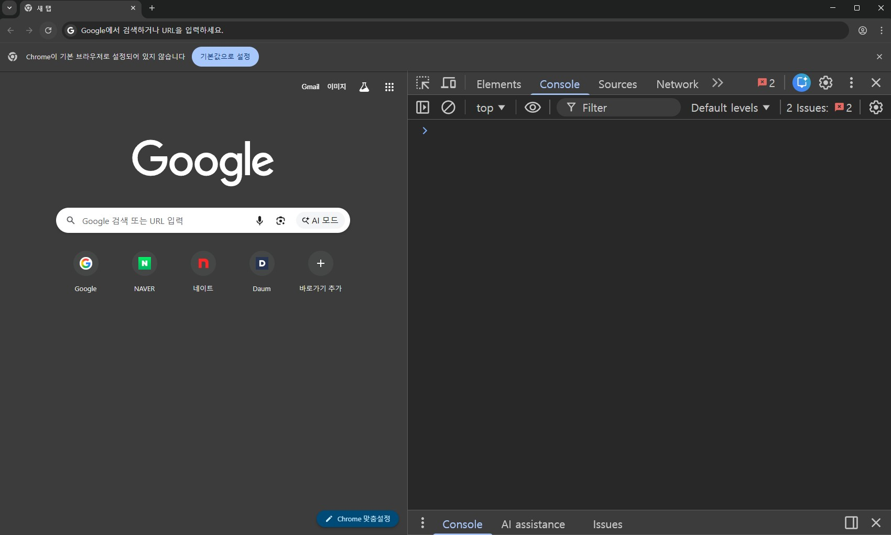

자바스크립트 이해
1. 프런트앤드 개발 이해하기
-
1단계
- 고객(클라이언트)에게 개발을 의뢰를 받으면 고객의 요구에 맞게 기획안을 작성
-
2단계
- 기획안을 토대로 디자이너가 화면에 보여질 UI(User Interface)를 디자인
-
3단계
- 프런트엔드 개발 단계로 HTML, CSS, JavaScript, JQuery 등을 이용해 사용자(사이트 방문자)의 눈에 보이는 부분을 개발
-
4단계
- 백엔드 개발자는 3단계 결과를 ASP, PHP, JSP 등 서버 언어를 이용하여 화면에 보이지 않는 부분을 개발

- 백엔드 개발자는 3단계 결과를 ASP, PHP, JSP 등 서버 언어를 이용하여 화면에 보이지 않는 부분을 개발
2. 자바스크립트의 이해
-
자바스크립트는 프런트엔드 개발 언어이며 정적인 웹 문서에 동작을 부여
- 웹 페이지에 생동감을 불어넣기 위해 만들어진 프로그래밍 언어

- 웹 페이지에 생동감을 불어넣기 위해 만들어진 프로그래밍 언어
-
자바스크립트 탄생 배경
-
브라우저에서 동작하는 언어인 자바스크립트는 1995년 세계 최초의 상용 브라우저인 넷스케이프 내비게이터(Netscape Navigator)를 출시한 넷스케이프 커뮤니케이션즈가 개발
-
출시 초기에는 라이브스크립트(LiveScript)라는 이름을 가지고 있었지만 당시 유행하던 자바의 영향을 받아 자바스크립트(JavaScript)로 변경
-
구글 지도의 등장으로 새로운 웹의 가능성과 자바스크립트의 가능성을 인식
- 당시 구글은 서버에서 반환된 HTML 데이터를 읽어들인 후 지도 확장이나 축소, 슬라이드 등의 동작을 브라우저에서 구현하고자 함

- 당시 구글은 서버에서 반환된 HTML 데이터를 읽어들인 후 지도 확장이나 축소, 슬라이드 등의 동작을 브라우저에서 구현하고자 함
-
각 브라우저는 자바스크립트를 구동하기 위한 엔진을 갖고 있으며 이를 자바스크립트 가상 머신이라 함
- Chrom, Opera(V8), FireFox(SpiderMonky), IE(Triden 및 Chakar), Microsoft Edge(ChakraCore), Safari(Nitro 및 SquirrelFish)
-
국제 정보통신표준화기구(ECMA, European Computer Manufacturers Association)는 1996년부터 자바스크립트 표준화를 시작
- 각 브라우저 개발사들의 자바스크립트 엔진이 다르고 그에 따른 사용자들의 크로스 브라우징 이슈와 자바스크립트의 파편화를 방지 목적
-
ECMAScript(또는 ES)는 ECMA에 의해 표준화된 범용 프로그래밍 언어로 서로 다른 웹 브라우저들에서 웹 페이지의 상호운용성을 보장하기 위한 자바스크립트 표준
- ECMAScript는 스크립팅 언어를 어떻게 만들어야 하는지를 설명하는 일종의 설명서이고, 자바스크립트는 ECMAScript의 사양을 바탕으로 만들어진 언어
-
-
자바스크립트로 할 수 있는 일
-
Native React라는 프레임워크를 통하여 HTML, CSS, JS 만으로 웹 어플리케이션, 안드로이드 어플리케이션, ISO 어플리케이션을 한 방에 작성 가능
-
three.js 라이브러리를 통해 3D 게임, 애니메이션 등을 제작하고, 데이터 시각화도 가능
- three.js 사이트(http://threejs.org)에서 확인
-
Electron으로 데스크톱 개발이 가능하고, 윈도우, 맥, 리눅스까지 지원

-
TensorflowJS, BrainJS 등의 라이브러리를 활용하면 적은 파라미터로도 충분한 성능을 보여줄 수 있는 머신러닝 신경망을 학습하고 학습된 모델을 실행시켜 볼 수 있음

-
3. 자바스크립트 기초 문법
-
자바스크립트 선언문
-
선언문은 자바스크립트 코드를 작성할 영역을 선언하는 것
-
<script>태그로 선언문이 시작된 곳부터</script>태그로 종료된 곳까지가 스크립트 영역 -
<head>태그 영역 또는<body>태그 영역에 선언- 대부분
<head>태그 영역에 작성
- 대부분
-
선언문 안에 코드가 아닌 설명글을 넣고 싶을 때는 주석 처리
- 한 줄 주석일 경우: '//한줄 설명글'로 작성
- 여러 줄 주석일 경우: '/* 여러 줄 설명글 */'로 작성
HTML 코드 보기/숨기기(클릭)
/* head 영역에 작성 */ <head> <script> document.write("환영합니다"); </script> </head>
-
-
내부 스크립트 외부로 분리하기
-
프로젝트 관리를 원활하게 하기 위해서 HTML 내부에 작성된 자바스크립트 소스를 외부로 분리
HTML 코드 보기/숨기기(클릭)
/* head 영역에 작성 */ <head> <script src="script.js"></scipt> </head>JS 코드 보기/숨기기(클릭)
/* script라는 이름의 자바스크립트 파일을 생성 후 작성 */ document.write("환영합니다");
-
-
코드 입력 시 주의사항
-
대소문자를 구분하여 작성
- 잘못된 예:
document.Write("환영합니다"); - 올바른 예:
document.write("환영합니다");
- 잘못된 예:
-
코드를 한 줄 작성한 후에는 세미콜론(;)을 작성
- 잘못된 예:
document.write("환영합니다") - 올바른 예:
document.write("환영합니다");
- 잘못된 예:
-
한 줄에 한 문장만 작성하는 것이 가독성을 위해 좋음
- 권장하지 않음:
document.write("여러분"); document.write("환영합니다"); - 권장함:
document.write("여러분");
document.write("환영합니다");
- 권장하지 않음:
-
문자형 데이터를 작성할 때는 큰따옴표와 작은따옴표의 겹침 오류를 주의
- 잘못된 예:
document.write("환영 "매우 환영"합니다"); - 올바른 예:
document.write('환영 "매우 환영"합니다');
- 잘못된 예:
-
중괄호 또는 소괄호의 짝이 맞아야 함
- 잘못된 예:
document.write("환영합니다"; - 올바른 예:
document.write("환영합니다");
- 잘못된 예:
-
4. 실습 환경
-
Visual Studio Code
-
웹 문서 내에서의 자바스크립트 구동 방식을 이해하기 위해 기본적으로는 Visual Studio Code를 활용하여 실습 진행
- 자바스크립트는 내부 스크립트를 외부로 분리하여 선언하는 방식 사용
-
간단한 코드 입력은 구글 크롬의 개발자 도구 활용
- 크롬 브라우저에서 F12 버튼(또는 단축키 Ctrl + Shift + i)을 눌러 개발자 도구 실행
- Elements: HTML 요소에 적용된 스타일(CSS)을 검사
- Console: 자바스크립트 오류 체크 및 디버깅(debugging)
- Source: 브라우저가 자바스크립트 소스를 파싱(parsing)해 오는 과정을 보여줌

-